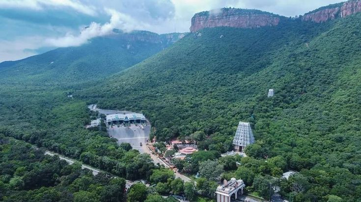

TIRUPATHI
SESHACHALAM FORESTS

- Seshachalam Hills are hilly ranges part of the Eastern Ghats in southern Andhra Pradesh state, in southeastern India.
- The Seshachalam hill ranges are predominantly present in Annamayya and Tirupati districts of the Rayalaseema region in Andhra Pradesh, India.
- The Seshachalam hill ranges running to North West to South East, over to a length about 80 km and width ranged from 32 to 40 km in the two Rayalaseema region districts, Tirupati and Kadapa.
- These ranges have typical gorges and gaps due to faulting and stream erosion resulting in to discontinuous ranges. The altitude of Seshachalam hill ranges varies from 168 to 1187 m above MSL.
- The highest hill peak is Tellaralla penta (1187 m) and most of the other hill peaks are above 900 m MSL.
- Tirupati, a major Hindu pilgrimage town is located in the hills. The hills contain seven peaks namely, Anjanadri, Garudadri, Narayanadri, Neeladri, Seshadri, Venkatadri and Vrishabhadri, the highest at about 600 m (2,000 ft) above sea level.
- The Srivenkateshwara National Park is also located in these ranges. The famous Natural Arch, Tirumala Hills is also a part of Seshachalam Hills, which dates back to the period in between Middle and Upper Proterozoic Eon.